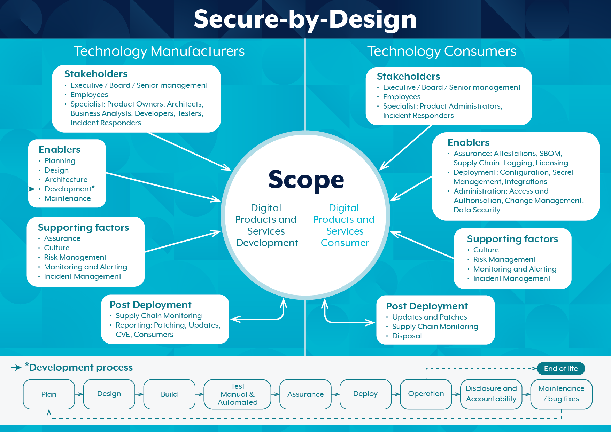

Secure by design tähendab tarkvaratehnikas, et tarkvaratooted ja
võimekused on loodud põhimõtteliselt turvaliseks.
Alternatiivseid turbestrateegiaid, taktikaid ja mustreid arvestatakse tarkvara
kavandamise alguses ning parimad valib välja ja jõustab arhitektuur ning neid kasutatakse
arendajatele juhtpõhimõtetena. Samuti soovitatakse kasutada strateegilisi disainimustreid,
millel on turvalisusele kasulik mõju, kuigi need kujundusmustrid ei olnud
algselt välja töötatud turvalisust silmas pidades.
Secure by design on muutumas üha enam peamiseks arendusmeetodiks tarkvarasüsteemide
turvalisuse ja privaatsuse tagamiseks. Selle lähenemisviisi puhul arvestatakse turvalisust ja
see on süsteemi sisse ehitatud igas kihis ning see algab tugevast arhitektuurilisest disainist.
Turvaarhitektuurse disainilahenduse otsused põhinevad tuntud turvastrateegiatel, taktikatel ja
mustritel, mis on määratletud kui korduvkasutatavad tehnikad konkreetsete kvaliteediprobleemide saavutamiseks.
Turvataktikad/mustrid pakuvad lahendusi vajaliku autentimise, autoriseerimise, konfidentsiaalsuse,
andmete terviklikkuse, privaatsuse, vastutuse, kättesaadavuse, ohutuse ja tagasilükkamise
nõuete jõustamiseks isegi siis, kui süsteem on rünnaku all.
Tarkvarasüsteemi turvalisuse tagamiseks ei ole oluline mitte ainult kavandatud robustne turbearhitektuur,
vaid ka tarkvaraarenduse uuendatud turbestrateegiate, -taktikate ja -mustrite kaardistamine,
et säilitada turvalisuse püsivus.

| Head | Halvad |
|---|---|
| Näitab pühendumist turvalisusele: tõotuse allkirjastamine annab avalikult märku ettevõtte pühendumusest turvalistele tarkvaraarenduse tavadele. See võib suurendada kaubamärgi mainet ja luua potentsiaalsete klientide usaldust. |
Arenduskultuuri muutmine: funktsioonidele ja funktsionaalsusele keskendunud arendusprotsessilt protsessile, mis integreerib turvalisuse algusest peale, nõuab arendusmeeskondade sees olulisi kultuurilisi muutusi. Turvalisust tuleks pidada toote oluliseks aspektiks, mitte millekski, mis on lihtsalt lisand. |
| Keskendumine mõõdetavale turvalisusele: lubadus julgustab tulemustele orienteeritud lähenemist turvalisusele, juhtides konkreetseid meetmeid, mis parandavad selgelt tarkvaratoodete turvalisust. |
Turvalisuse ja kasutatavuse tasakaalustamine: tugevad turvameetmed ei tohi kahjustada kasutajasõbralikku kogemust. Õige tasakaalu leidmine turvalisuse ja kasutatavuse vahel on kasutajate omaksvõtu ja tarkvara positiivse üldise kogemuse tagamiseks ülioluline. |
| Koostöö ja teadmiste jagamine: lubadus võib soodustada koostööd ja teadmiste jagamist tööstusharu osalejate vahel, mis viib turvalise tarkvaraarenduse tavade kollektiivse paranemiseni. |
Legacy infrastruktuur ja kood: paljudel organisatsioonidel on olemasolevad tarkvaratooted, mis on üles ehitatud vanematele koodibaasidele, mis ei pruugi olla loodud turvalisust silmas pidades. Turvaliste disainipõhimõtete tagantjärele paigaldamine nendesse pärandsüsteemidesse võib olla keeruline ja aeganõudev. |
| Täiustatud kaitse: tarkvara algusest peale turvafunktsioonide kaasamine muudab selle tugevamaks ja vähem haavatavaks, tagades, et ka võrk, milles see töötab, on turvaline – mis tõstab ka võrgu kvaliteeti, milles see töötab. |
Pidev ohumaastik: küberjulgeoleku maastik areneb pidevalt ja kogu aeg kerkib esile uusi ohte. Secure by design ei ole ühekordne lahendus; see nõuab pidevat pühendumist uusimate ohtudega kursis hoidmisele ja turvatavade vastavalt kohandamisele. |
| Sujuv vastavus: rangete andmete privaatsus- ja turvareeglite järgimine on Secure by design tarkvaraga lihtsam, vähendades nõuetele vastavuse kontrollimiseks kuluvat aega ja ressursse ning vältides karistusi. |
Kvalifitseeritud tööjõu nappus: Secure by design juurutamine tõhusalt nõuab spetsiaalsete turvateadmistega meeskonda. Siiski on ülemaailmne küberjulgeoleku spetsialistide puudus, mistõttu võib organisatsioonidel olla keeruline leida kvalifitseeritud töötajaid, mis on vajalikud Secure by design põhimõtete täielikuks omaksvõtmiseks. |
| Parem maine: ettevõtteid, kes seavad esikohale turvalisuse, peetakse usaldusväärsemaks, suurendades klientide usaldust ja lojaalsust. |
Kasutajate kaasamine: teenusepakkujad peaksid kaasama lõppkasutajaid disainiprotsessi, koguma tagasisidet, et luua hõlpsasti kasutatavaid turvaelemente. Pidev koolitus turvalisuse parimate tavade kohta on samuti oluline inimlike vigade vähendamiseks ilma kasutajat üle koormamata. |